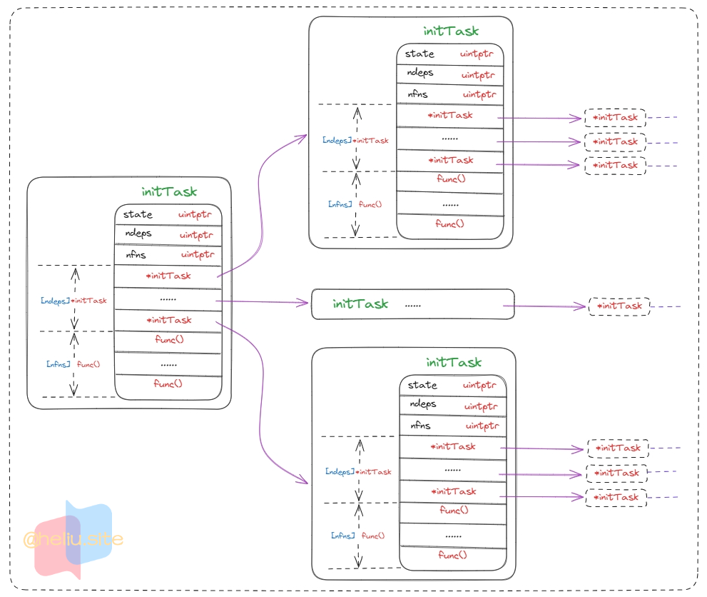

- 本篇介绍《Go 执行流程》中，关于
runtime·mainPC(SB)这个函数的相关内容。
runtime·mainPC(SB)#
- 该函数是主线程
goroutine注册的函数，首先会被唤起执行。
- 也是
runtime.gogo()函数切换栈和代码地址跳转而来。
- 文件位置：
go1.19.3/src/runtime/proc.go。
144
145
146
147
148
149
150
151
152
153
154
155
156
157
158
159
160
161
162
163
164
165
166
167
168
169
170
171
172
173
174
175
176
177
178
179
180
181
182
183
184
185
186
187
188
189
190
191
192
193
194
195
196
197
198
199
200
201
202
203
204
205
206
207
208
209
210
211
212
213
214
215
216
217
218
219
220
221
222
223
224
225
226
227
228
229
230
231
232
233
234
235
236
237
238
239
240
241
242
243
244
245
246
247
248
249
250
251
252
253
254
255
256
257
258
259
260
261
262
263
264
265
266
267
268
269
270
271
272
273
274
275
276
277
278
279
280
281
282
283
284
285
286
287
288
289
290
291
292
293
294
295
296
297
298
299
300
301
302
303
304
305
306
307
308
309
310
311
312
313
314
315
316
317
318
319
320
|
// The main goroutine.
func main() {
g := getg() // goroutine -> runtime.main
// Racectx of m0->g0 is used only as the parent of the main goroutine.
// It must not be used for anything else.
//
// m0->g0 的 Racectx 仅用作主 goroutine 的父级
// 它不能用于其他任何事情，仅仅由于标识
g.m.g0.racectx = 0 // 0 表示主goroutime
// Max stack size is 1 GB on 64-bit, 250 MB on 32-bit.
// Using decimal instead of binary GB and MB because
// they look nicer in the stack overflow failure message.
//
// 最大栈大小在 64 位上为 1 GB，在 32 位上为 250 MB。
// 使用十进制而不是二进制 GB 和 MB，因为它们在栈溢出失败消息中看起来更好。
if goarch.PtrSize == 8 {
// maxstacksize 是单个goroutine栈大小的最大上限值。[2KB,1GB]
maxstacksize = 1000000000
} else {
maxstacksize = 250000000
}
// An upper limit for max stack size. Used to avoid random crashes
// after calling SetMaxStack and trying to allocate a stack that is too big,
// since stackalloc works with 32-bit sizes.
//
// 栈大小的上限。用于避免在调用SetMaxStack并试图分配过大的栈之后的随机崩溃，因为stackalloc可以处理32位大小的栈。
// 用于判断单个goroutine栈大小上限。在newstack()函数中被使用。
maxstackceiling = 2 * maxstacksize
// Allow newproc to start new Ms.
//
// 标记主线程runtime.main已启动，允许 newproc 启动新的M。
mainStarted = true
// 【创建监控线程】，该线程独立于调度器之外，不需要跟P关联。
// wasm上还没有线程，所以没有sysmon。
if GOARCH != "wasm" { // no threads on wasm yet, so no sysmon
// 切换到g0栈执行newm函数创建监控线程sysmon。
systemstack(func() {
newm(sysmon, nil, -1)
})
}
// Lock the main goroutine onto this, the main OS thread,
// during initialization. Most programs won't care, but a few
// do require certain calls to be made by the main thread.
// Those can arrange for main.main to run in the main thread
// by calling runtime.LockOSThread during initialization
// to preserve the lock.
//
// 在初始化期间，将main goroutine锁定到这个主操作系统线程上。
// 大多数程序不会在意，但有一些确实需要main线程进行某些调用。
// 它们可以通过调用runtime来安排main.main在主线程中运行。LockOSThread在初始化期间保存锁。
lockOSThread()
// runtime.main初始化时只有m0这个线程
if g.m != &m0 {
throw("runtime.main not on m0")
}
// Record when the world started.
// Must be before doInit for tracing init.
//
// runtimeInitTime 是运行时开始的nanotime()。
// 记录the world started开始时间。
// 如果要跟踪init，必须在doInit之前。
runtimeInitTime = nanotime()
if runtimeInitTime == 0 {
throw("nanotime returning zero")
}
if debug.inittrace != 0 {
inittrace.id = getg().goid
inittrace.active = true
}
// 初始化为runtime包完成的一组初始化，执行runtime包中所有的init函数。
// 必须在defer之前。递归调用runtime包的相关init()函数。
doInit(&runtime_inittask) // Must be before defer.
// Defer unlock so that runtime.Goexit during init does the unlock too.
//
// 延迟解锁，以便 runtime.Goexit 在 init 期间也进行解锁
needUnlock := true // 标记当前主线程还未被解锁，main函数退出了需要执行defer解锁
defer func() {
if needUnlock {
unlockOSThread()
}
}()
// 创建GC相关的扫描器和清理器。
gcenable() // 清扫协程，参看GC相关
// main_init_done 是 cgocallbackg 使用的一个信号，表明初始化已经完成
// 它是在 _cgo_notify_runtime_init_done 之前完成的，所以所有的 cgo 调用都可以依赖它存在
// 当 main_init 完成时，它被关闭，这意味着 cgocallbackg 可以可靠地从中接收
main_init_done = make(chan bool)
if iscgo {
if _cgo_thread_start == nil {
throw("_cgo_thread_start missing")
}
if GOOS != "windows" {
if _cgo_setenv == nil {
throw("_cgo_setenv missing")
}
if _cgo_unsetenv == nil {
throw("_cgo_unsetenv missing")
}
}
if _cgo_notify_runtime_init_done == nil {
throw("_cgo_notify_runtime_init_done missing")
}
// Start the template thread in case we enter Go from
// a C-created thread and need to create a new thread.
startTemplateThread()
cgocall(_cgo_notify_runtime_init_done, nil)
}
// 递归调用main包相关引用包的init()函数
doInit(&main_inittask)
// Disable init tracing after main init done to avoid overhead
// of collecting statistics in malloc and newproc
//
// 在主初始化完成后禁用初始化跟踪以避免在 malloc 和 newproc 中收集统计信息的开销
inittrace.active = false
close(main_init_done) // 关闭main_init_done，此时在main_init_done上面的goroutine将被执行
needUnlock = false // 标记当前主线程OS已被解锁
unlockOSThread() // 解锁主线程
if isarchive || islibrary {
// A program compiled with -buildmode=c-archive or c-shared
// has a main, but it is not executed.
// 使用 -buildmode=c-archive 或 c-shared 编译的程序有一个 main，但它不会被执行
return
}
// 进行间接调用，因为链接器在放置运行时时不知道主包的地址
// main.main函数是我们主包的地址所在
fn := main_main // make an indirect call, as the linker doesn't know the address of the main package when laying down the runtime
fn() // 进入main.main开始执行代码
if raceenabled {
racefini()
}
// Make racy client program work: if panicking on
// another goroutine at the same time as main returns,
// let the other goroutine finish printing the panic trace.
// Once it does, it will exit. See issues 3934 and 20018.
//
// 让racy客户端程序工作：如果在main返回的同时在另一个goroutine上painc，让另一个goroutine完成打印painc跟踪
if atomic.Load(&runningPanicDefers) != 0 {
// Running deferred functions should not take long.
for c := 0; c < 1000; c++ {
if atomic.Load(&runningPanicDefers) == 0 {
break
}
Gosched()
}
}
if atomic.Load(&panicking) != 0 {
gopark(nil, nil, waitReasonPanicWait, traceEvGoStop, 1)
}
// 进入系统调用，退出进程，可以看出main goroutine并未返回，而是直接进入系统调用退出进程了
exit(0)
// 保护性代码，如果exit意外返回，下面的代码也会让该进程crash死掉
for {
var x *int32 // 这里为nil
*x = 0 // 给一个不存在的地址赋值，会出错的
}
}
|
lockOSThread()#
- 文件位置：
go1.19.3/src/runtime/proc.go。
4416
4417
4418
4419
4420
|
//go:nosplit
func lockOSThread() {
getg().m.lockedInt++
dolockOSThread()
}
|
dolockOSThread()
- 下面的
LockOSThread和lockOSThread在修改m.locked后调用dolockOSThread()。
- 在这个调用期间不允许抢占，否则这个函数中的
m可能与调用者中的m不同。
- 文件位置：
go1.19.3/src/runtime/proc.go。
4370
4371
4372
4373
4374
4375
4376
4377
4378
4379
4380
4381
4382
|
// dolockOSThread is called by LockOSThread and lockOSThread below
// after they modify m.locked. Do not allow preemption during this call,
// or else the m might be different in this function than in the caller.
//
//go:nosplit
func dolockOSThread() {
if GOARCH == "wasm" {
return // no threads on wasm yet
}
_g_ := getg()
_g_.m.lockedg.set(_g_)
_g_.lockedm.set(_g_.m)
}
|
unlockOSThread()#
- 文件位置：
go1.19.3/src/runtime/proc.go。
4462
4463
4464
4465
4466
4467
4468
4469
4470
4471
|
//go:nosplit
func unlockOSThread() {
_g_ := getg()
// 没有加锁时解锁。
if _g_.m.lockedInt == 0 {
systemstack(badunlockosthread)
}
_g_.m.lockedInt--
dounlockOSThread()
}
|
dounlockOSThread()
- 文件位置：
go1.19.3/src/runtime/proc.go。
4422
4423
4424
4425
4426
4427
4428
4429
4430
4431
4432
4433
4434
4435
4436
4437
|
// dounlockOSThread is called by UnlockOSThread and unlockOSThread below
// after they update m->locked. Do not allow preemption during this call,
// or else the m might be in different in this function than in the caller.
//
//go:nosplit
func dounlockOSThread() {
if GOARCH == "wasm" {
return // no threads on wasm yet
}
_g_ := getg()
if _g_.m.lockedInt != 0 || _g_.m.lockedExt != 0 {
return
}
_g_.m.lockedg = 0
_g_.lockedm = 0
}
|
doInit()#
type initTask struct
initTask表示需要为包执行的初始化集合。- 与
../../test/initempty.go:initTask保持同步。
- 文件位置：
go1.19.3/src/runtime/proc.go。
6272
6273
6274
6275
6276
6277
6278
6279
6280
6281
6282
6283
6284
6285
6286
6287
6288
|
// An initTask represents the set of initializations that need to be done for a package.
// Keep in sync with ../../test/initempty.go:initTask
type initTask struct {
// TODO: pack the first 3 fields more tightly?
//
// 将前3个字段封装得更紧密?
// state：0 未初始化；1 初始化中；2 已初始化
state uintptr // 0 = uninitialized, 1 = in progress, 2 = done
ndeps uintptr // 当前包依赖几个包
nfns uintptr // 当前包有几个init函数
// followed by ndeps instances of an *initTask, one per package depended on
// followed by nfns pcs, one per init function to run
//
// 然后是*initTask的ndeps实例，每个包依赖于一个nfns pcs，每个init函数运行一个
// ndeps 个 *initTask // 指向当前包结构的那些包的initTask
// nfns 个 func() // 当前包的那些init函数
}
|
- 结构图：一个
initTask就是一个包结构。
[ndeps]*initTask：包含当前包引用的其他包结构。[nfns]func()：表示当前包定义的所有init()函数。
runtime.main函数中会递归从最后调用init()函数。

- 包初始化，静态初始化、非静态初始化。
- 静态初始化：包级别变量的初始化工作应该在程序代码开始使用这些变量前完成，参看包初始化文档。
- 非静态初始化：包级别变量
m的初始值需要进行函数调用，并不是一个能够被编译器在编译阶段求值的表达式时。
doInit()函数：只是执行注册包的init()函数作用。- 文件位置：
go1.19.3/src/runtime/proc.go。
6294
6295
6296
6297
6298
6299
6300
6301
6302
6303
6304
6305
6306
6307
6308
6309
6310
6311
6312
6313
6314
6315
6316
6317
6318
6319
6320
6321
6322
6323
6324
6325
6326
6327
6328
6329
6330
6331
6332
6333
6334
6335
6336
6337
6338
6339
6340
6341
6342
6343
6344
6345
6346
6347
6348
6349
6350
6351
6352
6353
6354
6355
6356
6357
6358
6359
6360
6361
6362
6363
6364
|
func doInit(t *initTask) {
switch t.state {
// 已初始化
case 2: // fully initialized
return
// 正在初始化中
case 1: // initialization in progress
throw("recursive call during initialization - linker skew")
// 没有初始化
default: // not initialized yet
// 标记当前包正在初始化中
t.state = 1 // initialization in progress
// 遍历当前包依赖的包，t.ndeps记录的依赖的包数量
for i := uintptr(0); i < t.ndeps; i++ {
// 偏移到指定位置，获取到ndeps位置的*initTask数据
// 3*goarch.PtrSize 表示前state、ndeps、nfns所占的内存大小
p := add(unsafe.Pointer(t), (3+i)*goarch.PtrSize) // 64位占8字节
t2 := *(**initTask)(p) // *initTask
// 这里也是导致从最内层的包开始倒叙执行初始化的原因
doInit(t2) // 递归
}
// 如果当前包没有init函数，直接把包标记成2已完成并直接返回
if t.nfns == 0 {
t.state = 2 // initialization done
return
}
var (
start int64 // 调试模式情况使用，记录开始时间
before tracestat
)
if inittrace.active {
start = nanotime()
// Load stats non-atomically since tracinit is updated only by this init goroutine.
before = inittrace
}
// 偏移到init函数的地址处
firstFunc := add(unsafe.Pointer(t), (3+t.ndeps)*goarch.PtrSize)
// 遍历并执行包注册的init函数，同一个包的不同go文件中init函数执行时是无序的
for i := uintptr(0); i < t.nfns; i++ {
p := add(firstFunc, i*goarch.PtrSize) // 偏移到init函数位置
f := *(*func())(unsafe.Pointer(&p)) // func()
f() // 执行init函数
}
// 调试模式下 打印相关参数
if inittrace.active {
end := nanotime()
// Load stats non-atomically since tracinit is updated only by this init goroutine.
after := inittrace
f := *(*func())(unsafe.Pointer(&firstFunc))
pkg := funcpkgpath(findfunc(abi.FuncPCABIInternal(f)))
var sbuf [24]byte
print("init ", pkg, " @")
print(string(fmtNSAsMS(sbuf[:], uint64(start-runtimeInitTime))), " ms, ")
print(string(fmtNSAsMS(sbuf[:], uint64(end-start))), " ms clock, ")
print(string(itoa(sbuf[:], after.bytes-before.bytes)), " bytes, ")
print(string(itoa(sbuf[:], after.allocs-before.allocs)), " allocs")
print("\n")
}
// 标记当前包已初始化完成
t.state = 2 // initialization done
}
}
|
gcenable()#
gcenable在runtime初始化之后被调用，在我们准备让用户代码运行之前被调用。- 它启动
background sweeper goroutine，以及 background scavenger goroutine，并启动GC。
- 文件位置：
go1.19.3/src/runtime/mgc.go。
- 更详情介绍参看GC篇文章。
171
172
173
174
175
176
177
178
179
180
181
182
183
184
185
186
|
// gcenable is called after the bulk of the runtime initialization,
// just before we're about to start letting user code run.
// It kicks off the background sweeper goroutine, the background
// scavenger goroutine, and enables GC.
func gcenable() {
// Kick off sweeping and scavenging.
// 启动 sweeping 和 scavenging。
c := make(chan int, 2) // 有缓冲2
go bgsweep(c) // 扫描
go bgscavenge(c) // 清扫
// 等待这两个goroutine运行起来。
<-c
<-c
// 现在运行时已经初始化，GC就可以了。
memstats.enablegc = true // now that runtime is initialized, GC is okay
}
|
bgsweep()#
- 文件位置：
go1.19.3/src/runtime/mgcsweep.go。
271
272
273
274
275
276
277
278
279
280
281
282
283
284
285
286
287
288
289
290
291
292
293
294
295
296
297
298
299
300
301
|
func bgsweep(c chan int) {
sweep.g = getg() // sweep g
// 初始化锁排名
lockInit(&sweep.lock, lockRankSweep)
lock(&sweep.lock) // mutex lock
sweep.parked = true
c <- 1 // 通知 gcenable 函数解除阻塞
// 调离CPU
goparkunlock(&sweep.lock, waitReasonGCSweepWait, traceEvGoBlock, 1)
for {
for sweepone() != ^uintptr(0) {
sweep.nbgsweep++
Gosched()
}
for freeSomeWbufs(true) {
Gosched()
}
lock(&sweep.lock)
if !isSweepDone() {
// This can happen if a GC runs between
// gosweepone returning ^0 above
// and the lock being acquired.
unlock(&sweep.lock)
continue
}
sweep.parked = true
goparkunlock(&sweep.lock, waitReasonGCSweepWait, traceEvGoBlock, 1)
}
}
|
bgscavenge()#
- 后台清扫器。后台清扫程序在mheap结构体中比例清除统计信息所描述的线以下维护应用程序的RSS。
- 文件位置：
go1.19.3/src/runtime/mgcscavenge.go。
608
609
610
611
612
613
614
615
616
617
618
619
620
621
622
623
624
625
626
627
628
629
|
// Background scavenger.
//
// The background scavenger maintains the RSS of the application below
// the line described by the proportional scavenging statistics in
// the mheap struct.
func bgscavenge(c chan int) {
scavenger.init() // scavenger 初始化
c <- 1 // 通知 gcenable 函数解除阻塞
// 调离CPU
scavenger.park()
for {
released, workTime := scavenger.run()
if released == 0 {
scavenger.park()
continue
}
atomic.Xadduintptr(&mheap_.pages.scav.released, released)
scavenger.sleep(workTime)
}
}
|